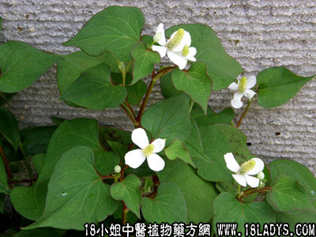

古籍名：蕺菜《名医别录》。
别名：狗贴耳、吉耳菜。
植物名：蕺菜。
生长环境：本品为多年生草本。喜生于阴湿地或近水的地方。
分布：我国长江以南诸省随处均有。
入药部分：全草。
采集期：夏、秋。
自采地点：湿润地。
性味：性平、味甘淡、气甚腥。
功能：去湿热、止咳、顺气、除痰、散瘀。
主治、用量和用法：1、内伤咳血：干用5钱至1两，清水煎服或加猪瘦肉同煎服；2、痢疾：用法同上；3、蛇头缠指：生用加片糖捣烂，外敷；4、热毒疮：用法同上。
参考资料：《本草纲目》，蕺，其叶腥气，故名为鱼腥草。赵叔云医方云：鱼腥草即紫蕺,叶似藤，其状三角，一边红，一边青，可以养猪。辛微温。有小毒。《别录》曰：多食令人气喘。弘景曰：俗传食蕺不利人脚，恐由闭气故也。令小儿食之，便觉脚疼，孙思邈曰：素有脚气人食之，一世不愈。主治：尿疮《别录》，淡竹筒内煨热，捣烂敷恶疮白秃（大明）。散热毒痈肿、痔疮脱肛、断店疾、解囱毒（李时珍）。
《西医学习中医论文选集》治疗大叶性肺炎5例：用鱼腥草30克、桔梗10克，先煎服桔梗，加水约200毫升，文火煎10～20分钟后加入鱼腥草，再煎5分钟后，过滤，取其滤液15毫升，如不足量，用蒸馏水洗残渣后，取其滤液补足。一般患者，日服三次，每次30毫升，重者改用日4次，病情更重可加用灌肠法，全部全愈。治疗大叶性肺炎，平均在用药34.4小时后，降温至平常，血象平均在2.8日后恢复正常，治疗日平均是8.8天。